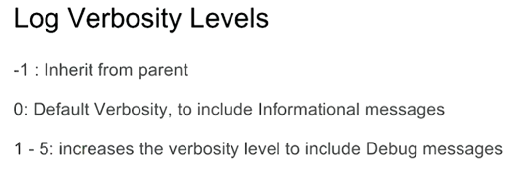
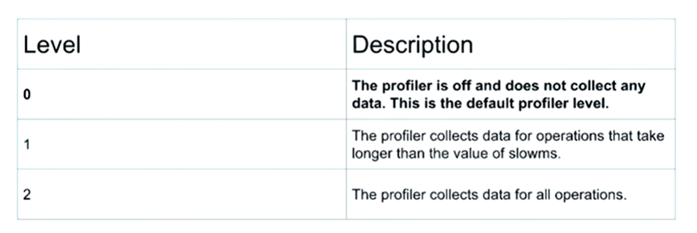
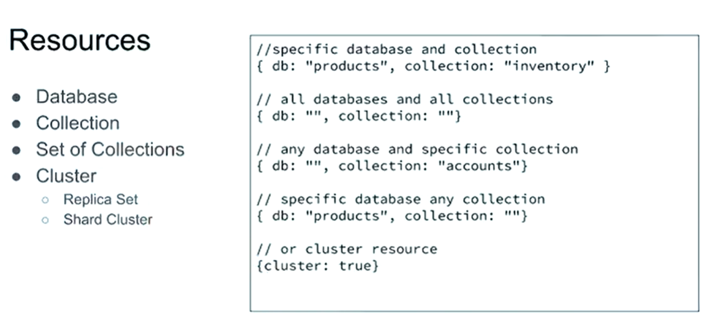
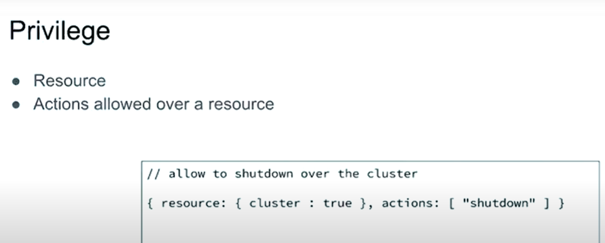
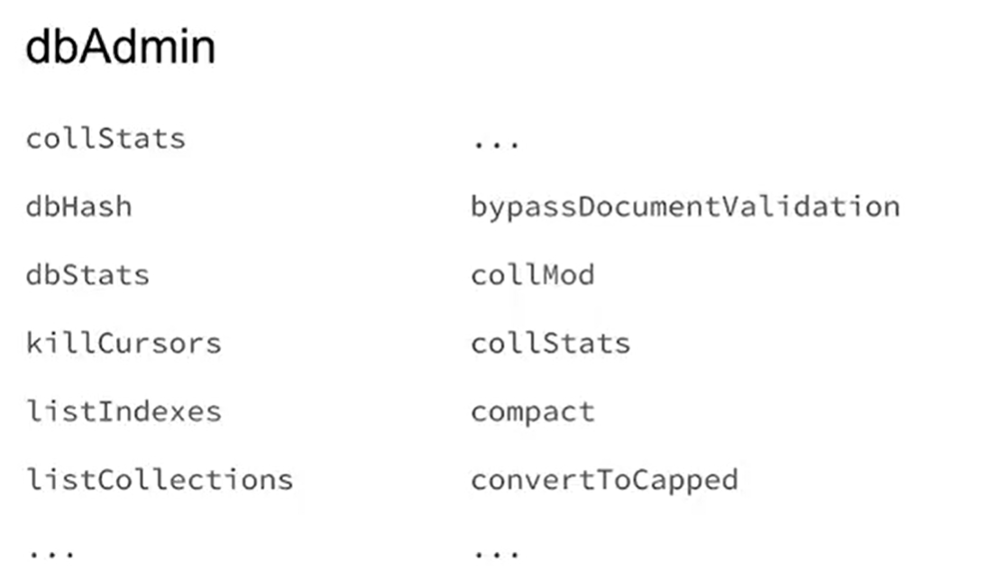
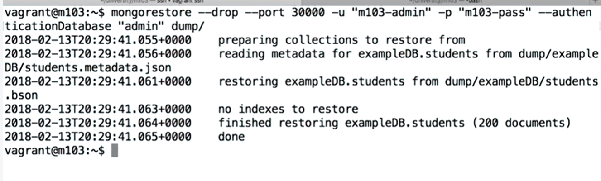
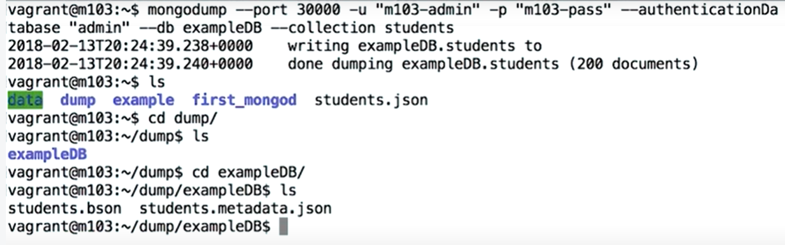
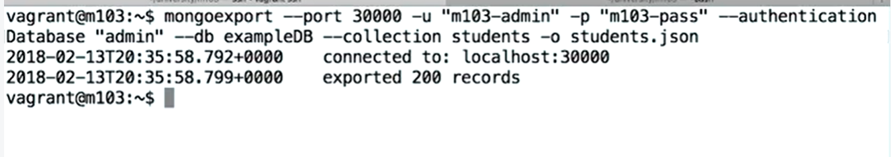
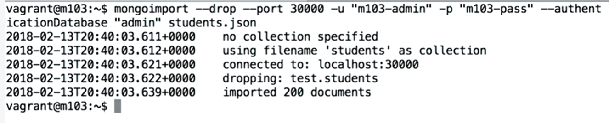
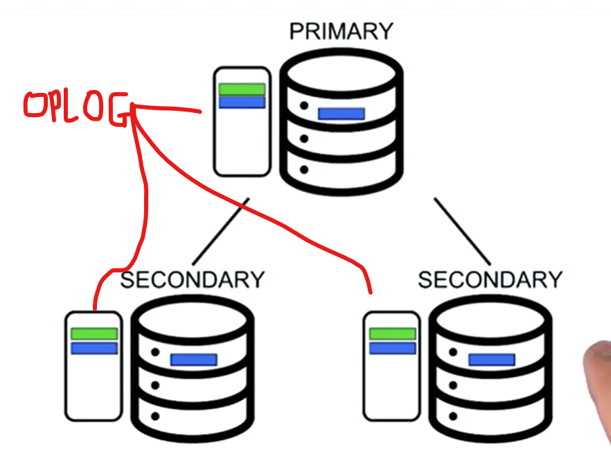

General Pointers
Mongod is what handles data requests and data access
MongoDB scales horizontally through sharding. Sharding is a method for distributing data across multiple machines. MongoDB uses sharding to support deployments with very large data sets and high throughput operations.
It is good to have a basic understanding of linux when dealing with MongoDB Cluster Admin as you will be working on linux servers
YAML files require consistent tabulation space for each section of the file. See Python code tabulation as YAML files follow the same spec
The log file collects detials of events caused on the server and the profiler collects information about the actual db commands. Profiler is used more for slow operations.
Info on fork
The difference between mongodump and mongoexport is that, Mongodump outputs BSON, but mongoexport outputs JSON, By default, mongoexport sends output to standard output, but mongodump writes to a file and Mongodump can create a data file and a metadata file, but mongoexport just creates a data file.
The Mongod
mongod is the primary daemon process for the MongoDB system. It handles data requests, manages data access, and performs background management operations.
- Daemon - In multitasking computer operating systems, a daemon is a computer program that runs as a background process, rather than being under the direct control of an interactive user.
- A daemon normally has a d appended to thier name which gives us the name Mongod.
- mongod is the main daemon process for Mongo, it is the core part of the database handling connections, requests and persisting your data.
- You database is normally replicated over multiple servers and the mongod process is ran on each server
- When start up mongo on a data base we start up mongod process on the database. We than use a client to interact with Mongod


- To start a mongod process you type mongod in the terminal. This starts the mongod service but we can interact with it directly. We have to leave this running and open a new terminal window and use the client to interact with mongo d
- Default Configuration
- Port: 27017
- The default db path is /data/db
- bind_ip:localhost
- auth: disabled
- We use the Mongo shell as the client to interact with the Mongod

- To get the Mongo shell started we simply type mongo in the temrinal after we have started the mongod server.
- To confirm our mongo shell is successfully connected we can see something like the below in monogd terminal

- As you start to run commands in the shell you will see the activity in the mongod terminal
- When finished we can quit the shell and shutdown mongod by using db.shutdownServer() and than exit
- The other ways to connect to MongoDB. MongoDB drivers are supported in many different lanuages.

Mongod Options
- mongod --help - This command will output the various options for mongod with a description of their functionality.
- The dbpath is the directory where all the data files for your database are stored. The dbpath also contains journaling logs to provide durability in case of a crash. As we saw before, the default dbpath is /data/db; however, you can specify any directory that exists on your machine. The directory must have read/write permissions since database and journaling files will be written to the directory. To use the dbpath option, include the dbpath flag and specify the name of your directory:
mongod --dbpath <directory path> - The port option allows us to specify the port on which mongod will listen for client connections. If we don't specify a port, it will default to 27017. Database clients should specify the same port to connect to mongod. To specify a port, run:
mongod --port <port number> - auth enables authentication to control which users can access the database. When auth is specified, all database clients who want to connect to mongod first need to authenticate.
Before any database users have been configured, a Mongo shell running on localhost will have access to the database. We can then configure users and their permission levels using the shell. Once one or more users have been configured, the shell will no longer have default access. To enable authentication, run mongod with the auth option:
mongod --auth - The bind_ip option allows us to specify which IP addresses mongod should bind to. When mongod binds to an IP address, clients from that address are able to connect to mongod. For instance, if we wanted to allow clients on IP address 123.123.123.123 to access our database, we'd use the following command:
mongod --bind_ip 123.123.123.123
To bind to multiple addresses and/or hosts, you can specify them in a comma-separated list:
mongod --bind_ip localhost,123.123.123.123
Configuration File
It is good practice to use a configuration file. Storing your mongod options. A configuration file stops you from having to state the required config everytime you start up mongod. Its clean and easy to understand in a config file.

See MongoDB documentation for more information about command line options and configuration file options.
When creating a config file we create a YAML file - YAML Ain't Markup Language
Below is a breakdown of how we create our config file
- Launch mongod using default configuration:
mongod - Launch mongod with specified --dbpath and --logpath:
mongod --dbpath /data/db --logpath /data/log/mongod.log - Launch mongod and fork the process: - Forking the process enables you to still use the current terminal window and not having to open a new window while mongod runs on that window.
mongod --dbpath /data/db --logpath /data/log/mongod.log --fork - Launch mongod with many configuration options:
Note that all "ssl" options have been edited to use "tls" instead. As of MongoDB 4.2, options using "ssl" have been deprecated.
mongod --dbpath /data/db --logpath /data/log/mongod.log --fork --replSet "M103" --keyFile /data/keyfile --bind_ip "127.0.0.1,192.168.103.100" --tlsMode requireTLS --tlsCAFile "/etc/tls/TLSCA.pem" --tlsCertificateKeyFile "/etc/tls/tls.pem" 
- In our YAML file we have a top level key which represents a logical grouping of options. Below we have a nested element which is associated information
- We can have multiple nested elements to the key, see the documentation
- You can add comments to a the config file but using #
- Example config file - See system log has two embedded attributes.
Below is how you enable auth

- We will need to use one command line option for this config file to work. They might already be a config file in the location whcih you can edit
mongod --config mongod.conf
mongod -f mongod.conf
How to create a admin user

File Structure
- Some common commands you will use in Linux searching through a file Structure

- Files that should not be touched by user

- WiredTiger is a NoSQL, Open Source extensible platform for data management. It is released under version 2 or 3 of the GNU General Public License. WiredTiger uses MultiVersion Concurrency Control (MVCC) architecture.
MongoDB acquired WiredTiger Inc. on December 16, 2014. The WiredTiger storage engine is the default storage engine starting in MongoDB version 3.2. It provides a document-level concurrency model, checkpointing, and compression, among other features. In MongoDB Enterprise, WiredTiger also supports Encryption At Rest.
Basic Commands
The mongo shell help can be found HERE
- Here you can find a list of all the Shell Methods you will need. This will be anything from creating a new user to renaming a collection.
- You have basic helper groups, called shell helpers:
- db.<method>() - These are for commands that interact with the database, like creating a user.
- sh.<collection>.<method>() - These are for commands that interact with the particlar collection of a database
- rs.<method>() - These are for commands that control replica set deployment and management, replication
- sh.<method>() - These are for commands that control shareded cluster deployment and management
- For user management you have the below:

- Many more relevant ones can be found HERE
db.runCommand() - Provides a helper to run specified database commands. This is the preferred method to issue database commands, as it provides a consistent interface between the shell and drivers.
Logging Basics
More info on Logging and Diagnostics

- Change the logging level:
mongo admin --host 192.168.103.100:27000 -u m103-admin -p m103-pass --eval '
db.setLogLevel(0, "index")
' - View the logs through the command line:
tail -f /data/db/mongod.log - Verbosity Levels - You can specify the logging verbosity level to increase or decrease the the amount of log messages MongoDB outputs. Verbosity levels can be adjusted for all components together, or for specific named components individually.
- The higher the number the more verbos you messages are, The operation sets the default verbosity to 1: db.setLogLevel(1)
 - View the logs through the Mongo shell:
db.adminCommand({ "getLog": "global" }) - A log file broken down
- A log file has a time stamp at every event on the log.
- Next is the severity level of the event - you have 5 types

- Next is the log component, which can be something like command
- Following is the connection the event occured on
- The app name and this can be the mongo shell or compass
- Then its the operation
Profiling the Database
- The database profiler collects detailed information about Database Commands executed against a running mongod instance. This includes CRUD operations as well as configuration and administration commands .
- This level of information is not held in the logs
- 
- db.getProfilingLevel() - This brings back the profiling level
- db.setProfilingLevel(2) - THis sets the profiling level
- db.system.profile.find().pretty() - This returns what is in the profile
Basic Security
- Mongodb starts of with the following checks

- Client authentication

- Cluster authentication - A secret handshake is used to join the cluster

- Role base access


- Start by checking your configuration file, seeing if security authorization has been enabled. This enables role based access control on the cluster and it also implicity enables authentication. You cannot have one without the other
- Print configuration file: cat /etc/mongod.conf
- When starting out you might not have made a user than. so when trying to login you can be authenticated as a user does not exist. In this instance you will use the Localhost Exception

- The Localhost Exception closes once you create your first user.
- Connecting to the local host use the following command - mongo --host 127.0.0.1:27017

- Make the admin Super User called root on the admin database - use admin

Built In Roles

- The structure of a role is as below:

- The resources your role can look at:
 - 
- A role can inherit roles from another role

- You can also apply restriction or access to a user to were they can connect

- Mongodb provides a set of built in roles

- All the roles below are per database
-
- Database User - Read, readwrite
- Database administration - Read, readwrite, dbadmin, userAdmin, dbOwner
- Cluster administration - Database administration - Read, readwrite, dbadmin, userAdmin, dbOwner, clusteradmin, clustermanager, clustermonitor, hostmanager
- backup/restore - Database administration - Read, readwrite, dbadmin, userAdmin, dbOwner, clusteradmin, clustermanager, clustermonitor, hostmanager, backup, restore
- Super User - backup/restore - Database administration - Read, readwrite, dbadmin, userAdmin, dbOwner, clusteradmin, clustermanager, clustermonitor, hostmanager, backup, restore, root
- There are roles that are for all databases, database level

- start of by loging in with a user you have created, here is a root user that was previously created mongo admin -u <USERNAME> -p <PASSWORD>
- Its good to start off by creating a security office user for all databases. This user can not do anything with data administration.


- Now use the security office user to create another user to administor the database. This is the dbadmin user. This user cannot read/write any user data at all.

Here you see that we create this user on the admin database for the use of another database called m103. This is advised to do it this way for simplicity.
- db.grantRolesToUser(username, roles, writeConcern) - Grants additional roles to a user.
- Start a already running instance of mongod
mongo --host 127.0.0.1:27000 -u “m103-admin” -p “m103-pass” --authenticationDatabase “admin”
Server Tools Overview
- These are tools you get when you download the mongodb package:
- Mongod - the core database process the deamon.
- Mongo - Also known as the interactive mongo shell
- To see all the toolls we get when we download Mongodb we can use the command find /usr/bin/ -name "mongo*"
- mongostat - The mongostat utility provides a quick overview of the status of a currently running mongod or mongos instance. mongostat is functionally similar to the UNIX/Linux file system utility vmstat, but provides data regarding mongod and mongos instances.
- To run mongostat you use the code - mongostat --port <PORTNUMBER> - This command will keep running until you stop it
- mongorestore - The mongorestore tool imports content from an Extended JSON, CSV, or TSV export created by mongoexport, or potentially, another third-party export tool.
- 
- mongodump - mongodump is a utility for creating a binary export of the contents of a database. mongodump can export data from either mongod or mongos instances; i.e. can export data from standalone, replica set, and sharded cluster deployments.
- 
- mongoexport - mongoexport is a command-line tool that produces a JSON or CSV export of data stored in a MongoDB instance.
- 
- mongoimport - The mongoimport tool imports content from an Extended JSON, CSV, or TSV export created by mongoexport, or potentially, another third-party export tool.
- 
- Example to import a file
The code used was mongoimport --db applicationData --collection products --port 27000 -u "m103-application-user" -p "m103-application-pass" --authenticationDatabase "admin" --file "/dataset/products.json"
Replication
MongoDB uses asynchronous, statement-based replication because it's platform independent and allows more flexibility within a replica set.
- MongoDB uses statement-based replication, not binary replication.
- Replication is the concept of maintaining multiple copies of your data.
- The main reason why replication is necessary is because you can never assume that all of your servers will always be available.
- The point of replication is to make sure that in the event your server goes down, you can still access your data. This concept is called availability.
- A database that does not use replication only has a single database server, and we refer to these as standalone nodes.
- In MongoDB, a group of nodes that each have copies of the same data is called a replica set. And in a replica set, all data is handled by default in one of the nodes, and it's up to the remaining nodes in the set to sync up with it and replicate any new data that's been written through an asynchronous mechanism.
- The node where data is sent is called the primary node, and all the other nodes are referred to as secondary nodes.
- Binary Replication - The main mechanism used in replication is the binary log. If binary logging is enabled, all updates to the database (data manipulation and data definition) are written into the binary log as binlog events. Slaves read the binary log from each master in order to access the data to replicate.
In a binary replication you assume all nodes are on the same OS. All the nodes have to be configured exactly the same. - Statement-Based Replication - when a command is excuted to the database it is saved in the Oplog. All nodes sync there Oplog to the primary to replicate the chnages.
This wroks regardless of the nodes configuration on the nodes. - We can achieve data consistency through Idempotence
- Summary:

MongoDB Replica Sets
- Replica sets or groups of mongods that share copies of the same information between them.
- Replica set members can have one of two different roles. The either can be primary node where all reads and all writes are served by this node. Or secondary node where the responsibility of this node is to replicate all of the information, and then serve as a high availability to node in case of failure of the primary.
- The secondaries will get the data from the primary through an asynchronous replication mechanism.
- Every time an application writes some data to the replica set, that right is handled by the primary node. And then data gets replicated to the secondary nodes.
- The nodes use the oplog to ensure all data is synced correctly
 - Replica Set Arbiter - In some circumstances (such as you have a primary and a secondary but cost constraints prohibit adding another secondary), you may choose to add an arbiter to your replica set. An arbiter does not have a copy of data set and cannot become a primary. However, an arbiter participates in elections for primary. An arbiter has exactly 1 election vote.
- It is advised to have a odd number of nodes in your replica set.
- Replica Sets can go up to 50 numbers and can be spred all across the world
- Delayed Replica Set Members - Delayed members contain copies of a replica set’s data set. However, a delayed member’s data set reflects an earlier, or delayed, state of the set. For example, if the current time is 09:52 and a member has a delay of an hour, the delayed member has no operation more recent than 08:52.
- SEE FULL NOTES ON REPLICATION
Setting up a Replica Set
- Start of by launching three independant mongod processes. These will run independant until we connect them
- Below is a config file we will be using for node 1
- You will see a key file authentication under security that is being used to across all nodes, enabling them to authenticate they are all in the same cluster. This key file needs to be created.
- To create this key file we do the following:
- Make a location for it to live - sudo mkdir -p /var/mongodb/pki/
- Than something to do with vagrant which is virtulisation - sudo chown vagrant:vagrant /var/mongodb/pki/
- Create the actual key file - openssl rand -base64 741 > /var/mongodb/pki/m103-keyfile
- We change the permissions to allow the mongod's to read from the key file - chmod 400 /var/mongodb/pki/m103-keyfile
- Below is the part of the config file we use to first authenticate with the client and than authentication with the other nodes in the cluster.

- The below is used to specify the replica set this node is part of:
replication:
replSetName: m103-example - Start the mongod using the config file - mongod -f node1.conf. f is used fork of the mongod service enabling us to keep working on the same terminal using the monogo shell.
- This will successfully start one node and just need to start two more to create a cluster.
- To make things easier we can copy the config file for node one for the second and third node - cp node1.conf node2.conf and cp node1.conf node3.conf
- We will need to edit these file and we can use the command - vi node2.conf. To exist this and save your changes use - :wq
- The chnages will need to be - db path - port number and the log path. Some thing like THIS
- Before you start the second node dont forget to make the path - mkdir -p /var/mongodb/db/node2. Than start the node mongod -f node2.conf
- Do the same for the third node - node 3
- This example you will find that all three nodes reference the same key file. Normal the other nodes will be running on different machines so we would have to copy over the key file to every machine
- Still at this point all three nodes are not connected and are not aware of one another
- To start the replication between the nodes connect to the first node - mongo --port 27011
- Use the command to intiate the replication - rs.initiate()
- Now to add other nodes to the rteplication we need to use the admin db and create a user
- We need to now exit out of this particular mongod and log back into the entire replica set:
to exit we use - exit
to connect to the replicate set we use - mongo --host "m103-example/192.168.103.100:27011" -u "m103-admin" -p "m103-pass" --authenticationDatabase "admin" - the command rs.status() is a useful way to get the status on the replica set.
- We can now start adding the other nodes to our replica set - rs.add("m103:27012") and rs.add("m103:27013")
- Now might be a good time to get a overview of the replica set topology - rs.isMaster()
- In any cluster we will have a primary node. To swap this and force the current primary down we use - rs.stepDown()
- After a change like this it is good to check things are ok by using - rs.isMaster()